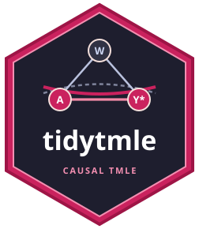
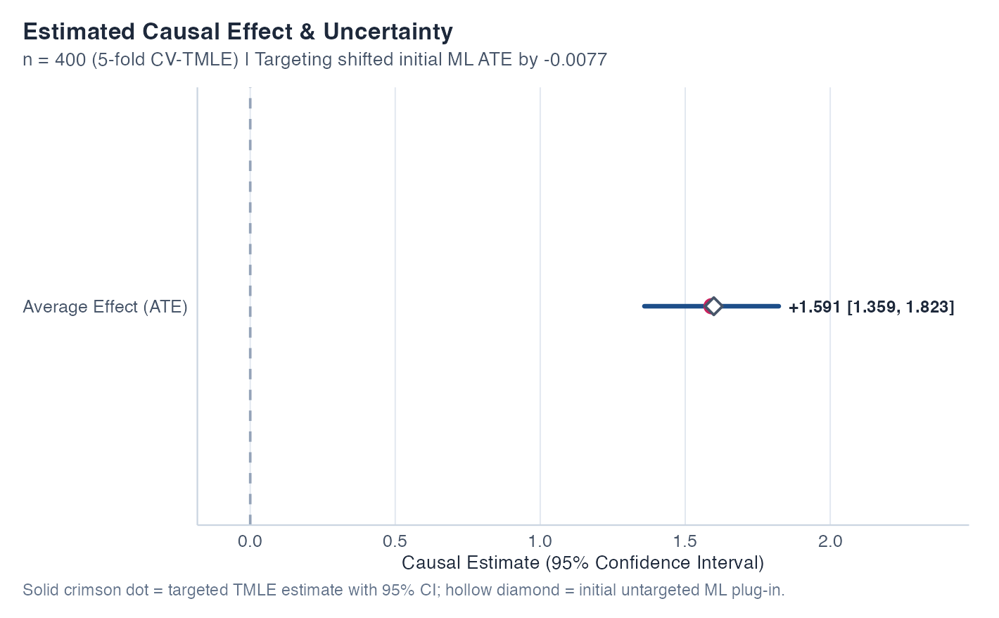
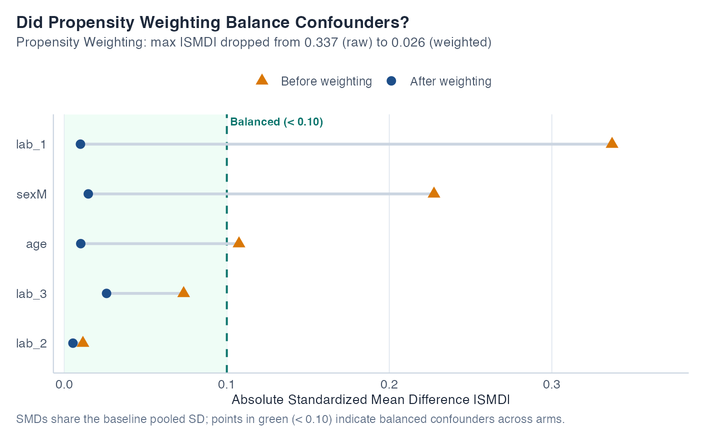
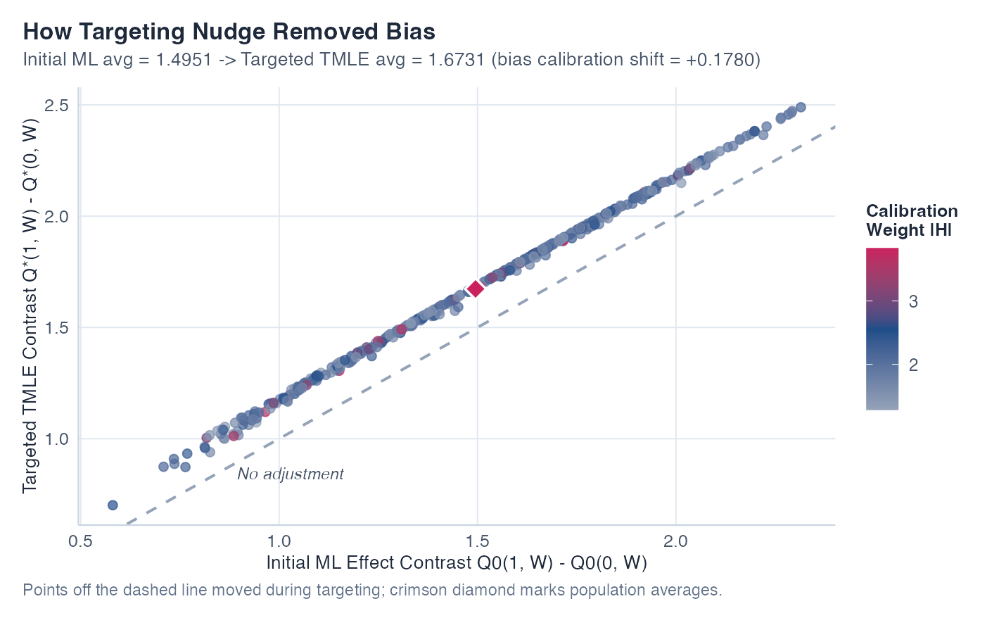

TMLE Intuition: A Step-by-Step Visual Guide
Source:vignettes/tmle-intuition.Rmd
tmle-intuition.RmdCausal inference often feels buried under semiparametric notation, yet the core intuition of Targeted Maximum Likelihood Estimation (TMLE) is simple enough to explain in two analogies drawn from classic tutorials (Schuler & Rose, 2017; Luque-Fernandez et al., 2018; van der Laan & Rubin, 2006):
Analogy 1 — “Build a Digital Twin, Then Re-Balance the Scale” (Predict, Then Target): First, use machine learning to predict each person’s outcome with and without treatment (their digital twin). Next, use who actually received treatment to nudge those predictions just enough to cancel any leftover confounding bias on the causal contrast you care about.
Analogy 2 — “Two Safety Nets” (Double Robustness): Pure outcome regression relies 100% on the outcome model; pure weighting relies 100% on the treatment propensity model. TMLE wears both safety nets: under causal identification assumptions, point estimation remains consistent if either model gets the confounding structure right.
Before Any Estimator — Three Causal Identification Assumptions: Statistics alone cannot turn observational correlations into causal effects without three structural conditions connecting observed data to counterfactual outcomes :
- Exchangeability (No Unmeasured Confounding): Measured confounders include all joint causes of treatment and outcome (). Data alone cannot prove this;
tidytmlequantifies sensitivity via VanderWeele–Ding E-values (tidy(..., e_value = TRUE)).- Positivity (Real-World Overlap): Every confounder profile has a positive probability of receiving each treatment arm ().
check_tmle()andautoplot(fit, type = "overlap")audit this directly.- Consistency & No Interference (SUTVA): Each person’s observed outcome matches their potential outcome for the treatment received, with no hidden treatment versions or spillover across units.
1. Comparing the Three Strategies Side-by-Side
Suppose we want the Average Treatment Effect (ATE) of a binary treatment on an outcome , adjusting for measured confounders :
| Everyday Choice | Technical Name | Where Single-Model Methods Struggle |
|---|---|---|
| Predict outcomes directly | G-Computation () | ML minimizes overall prediction error across , leaving slow-shrinking confounding bias in causal contrasts and invalid CIs. |
| Re-weight individuals only | IPTW Weighting () | Discards outcome information and explodes in variance when some groups rarely receive treatment (positivity violations). |
| Predict, then target | TMLE (tidytmle) |
Uses flexible ML for both and , then performs one gentle bias-removal fluctuation step (). |
2. Watching All 5 Steps Happen Inside tidytmle
Let’s run a 5-fold cross-fitted TMLE on a simulated cohort with known ground truth and inspect every diagnostic column and plot along the way:
library(tidytmle)
cohort <- sim_causal_cohort(n = 400, outcome_type = "continuous", seed = 42)
truth <- attr(cohort, "truth")
fit <- tmle_spec(
outcome = y,
treatment = a,
covariates = c(age, sex, starts_with("lab_")),
estimand = "ate"
) |>
set_resamples(v_folds = 5L) |>
fit(data = cohort)
autoplot(fit, type = "effect")
Step 1 & Step 2 · Are Treated and Control Groups Comparable?
First, cross-validated ensembles predict counterfactual outcomes
under treatment (.q1_init) and control
(.q0_init). Meanwhile, a separate classification Super
Learner models treatment propensity
(strictly blocking
and
from entering predictors) and checks whether treated and untreated
people actually overlap across confounder profiles:
autoplot(fit, type = "overlap")
We can also check directly whether propensity weights equalized
baseline differences (|SMD| < 0.10):
autoplot(fit, type = "balance")
Step 3 & Step 4 · How the Clever Covariate Nudges Initial Predictions
Where did initial ML leave residual bias? TMLE computes a
Clever Covariate (.clever_h):
Look at the intuition: people who received a surprising
treatment given their profile carry larger calibration weights
.
Holding initial predictions fixed on the bounded logit scale,
tidytmle fits arm-specific weighted-intercept fluctuations
(
weighted by
,
equivalent to target.gwt = TRUE; classical unweighted
covariate fluctuation is also available via
fluctuation = "logistic_covariate"), nudging
.q1_init -> .q1_star and
.q0_init -> .q0_star strictly along the causal
bias-removal path:
autoplot(fit, type = "targeting")
Step 5 · Causal Decoder Ring (augment() &
glance())
Every abstract quantity maps cleanly to a column inside
augment(fit) and glance(fit):
| Plain-English Concept |
augment() / glance() Column |
Healthy Signal |
|---|---|---|
| Initial digital-twin predictions |
.q0_init, .q1_init
|
Captures main outcome drivers |
| Chance of treatment (raw & clipped) |
.g_hat, .g_trunc
|
Substantial middle overlap between arms |
| Re-balancing leverage per row | .clever_h |
Bounded well away from infinity |
| Size of targeting bias nudge |
epsilon, plugin_vs_tmle_shift
|
Small if initial ML already captured confounding |
| Calibrated digital-twin predictions |
.q0_star, .q1_star
|
Stay strictly inside (0, 1) (binary) or
[min(Y), max(Y)] (continuous) |
| Uncertainty & convergence audit |
.eif, .eif_leverage,
mean_eif
|
mean_eif
;
no single row > 10% leverage |
aug <- augment(fit)
head(aug[, c("a", "y", ".q0_init", ".q1_init", ".g_trunc", ".clever_h", ".q0_star", ".q1_star", ".eif")])
#> # A tibble: 6 × 9
#> a y .q0_init .q1_init .g_trunc .clever_h .q0_star .q1_star
#> <int> <dbl> <dbl> <dbl> <dbl> <dbl> <dbl> <dbl>
#> 1 1 5.74 4.30 7.61 0.434 2.30 4.27 7.59
#> 2 0 1.74 2.25 3.26 0.408 -1.69 2.22 3.22
#> 3 0 3.12 3.79 6.64 0.513 -2.05 3.76 6.61
#> 4 0 2.84 3.50 5.83 0.371 -1.59 3.47 5.80
#> 5 0 -0.504 1.73 3.21 0.478 -1.92 1.70 3.17
#> 6 0 3.18 3.55 5.61 0.386 -1.63 3.52 5.57
#> # ℹ 1 more variable: .eif <dbl>
glance(fit)[, c("epsilon", "mean_eif", "plugin_vs_tmle_shift", "pct_truncated", "ess_treated", "ess_control")]
#> # A tibble: 1 × 6
#> epsilon mean_eif plugin_vs_tmle_shift pct_truncated ess_treated
#> <dbl> <dbl> <dbl> <dbl> <dbl>
#> 1 -0.0124 -2.20e-16 -0.00767 0 185.
#> # ℹ 1 more variable: ess_control <dbl>3. Live Test of “Two Safety Nets” (Double Robustness)
Watch what happens when we deliberately sabotage one nuisance
model at a time using parsnip::null_model() (a
blind intercept-only model that ignores every confounder!):
library(parsnip)
# Safety net 1 broken: blind Q, flexible g
fit_bad_q <- tmle_spec(
outcome = y,
treatment = a,
covariates = c(age, sex, starts_with("lab_"))
) |>
set_outcome_learners(null_model(mode = "regression") |> set_engine("parsnip")) |>
set_resamples(v_folds = 5L) |>
fit(data = cohort)
# Safety net 2 broken: flexible Q, blind g
fit_bad_g <- tmle_spec(
outcome = y,
treatment = a,
covariates = c(age, sex, starts_with("lab_"))
) |>
set_treatment_learners(null_model(mode = "classification") |> set_engine("parsnip")) |>
set_resamples(v_folds = 5L) |>
fit(data = cohort)
tibble::tibble(
Scenario = c(
"True ATE (Ground Truth)",
"Both Safety Nets Active (Default CV-TMLE)",
"Blind Q Only (Untargeted ML Plug-In)",
"Blind Q Only -> Rescued by TMLE Targeting",
"Blind g Only -> Rescued by Outcome Super Learner"
),
Estimate = c(
truth$true_ate,
tidy(fit)$estimate,
mean(augment(fit_bad_q)$.q1_init - augment(fit_bad_q)$.q0_init),
tidy(fit_bad_q)$estimate,
tidy(fit_bad_g)$estimate
),
SE = c(NA, tidy(fit)$std.error, NA, tidy(fit_bad_q)$std.error, tidy(fit_bad_g)$std.error)
)
#> # A tibble: 5 × 3
#> Scenario Estimate SE
#> <chr> <dbl> <dbl>
#> 1 True ATE (Ground Truth) 1.52 NA
#> 2 Both Safety Nets Active (Default CV-TMLE) 1.59 0.118
#> 3 Blind Q Only (Untargeted ML Plug-In) 0 NA
#> 4 Blind Q Only -> Rescued by TMLE Targeting 1.71 0.209
#> 5 Blind g Only -> Rescued by Outcome Super Learner 1.61 0.111Notice how untargeted regression on the blind outcome model collapses
to 0.00, yet TMLE’s targeting step uses
propensity weights to rescue the causal point estimate back toward
ground truth. Keep the exact statistical distinction in mind:
point consistency only requires one safety net
(
or
)
to be consistent, whereas valid EIF Wald confidence intervals
and semiparametric efficiency require both nuisance
models to converge fast enough that their second-order product remainder
shrinks faster than
under cross-fitting.
4. Built-In Guardrails & Founding Papers
Three practical traps break naive TMLE pipelines in applied research;
tidytmle protects against all three automatically:
-
Cross-Fitting (
cv_tmle = TRUE, Zheng & van der Laan, 2011): Out-of-fold nuisance predictions preserve valid confidence intervals even when using random forests or regularized spline ensembles. -
Bounded Canonical Logistic Fluctuation
(
fluctuation = "logistic", Gruber & van der Laan, 2010): Scaling outcomes into[0, 1]before logistic targeting keeps predictions strictly inside realistic outcome bounds. -
Adaptive Overlap Bounds (
g_bounds = "adaptive", Petersen et al., 2012; Gruber et al., 2022): Sample-size-aware bounds ( clamped to[0.01, 0.15]) prevent extreme inverse weights from hijacking standard errors.